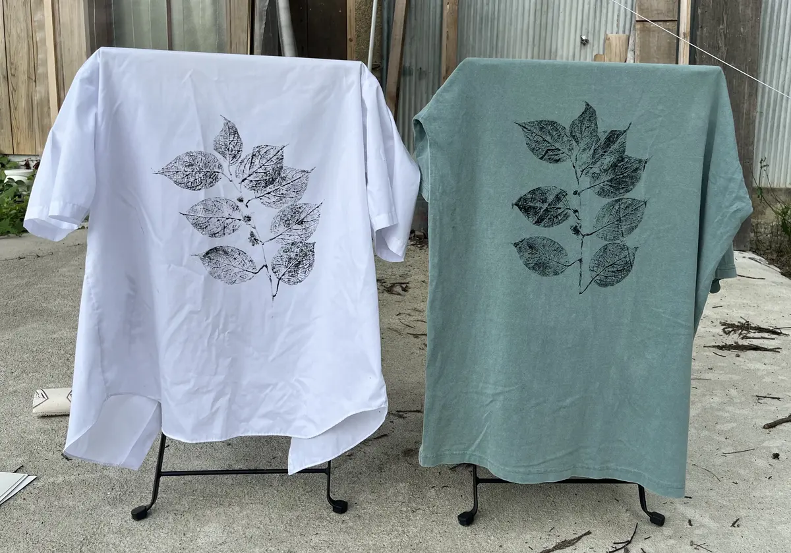

草花拓
採取した草花をそのまま版として布へ写す技法研究です。葉脈や茎の形だけでなく、採取した季節と場所の差が布に残る方法を試しました。

- Year
- 2025年
- Place
- 小院瀬見
- Materials / Method
- 植物、布、顔料
What I tried
葉脈の細部が出るよう顔料を薄く均一に置き、植物の水分量に応じて圧と時間を変えています。完成図を先に描くのではなく、その日に採れた植物の形から配置を決めました。定着後は洗いと乾燥を急がず、布の柔らかさが残る条件を探っています。